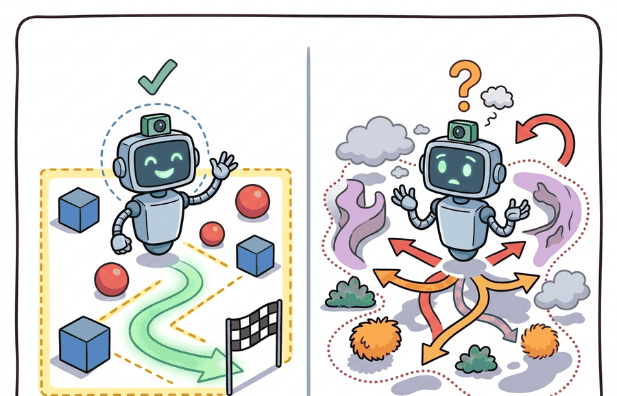

A closed-world benchmark is a tidy kitchen; deployment is the drawer where somebody put batteries, tape, and one mysterious screw.
A Junk Drawer Deployment

This section assumes familiarity with the agent-environment boundary and partial observability introduced in section 2.7, and with distribution shift as covered in section 20.1. The distinction drawn here between closed- and open-world contracts is extended directly in section 51.2 (novel objects and instructions) and section 51.5 (novelty detection and graceful degradation), where the abstention mechanism introduced below is operationalized into a full recovery pipeline.
A warehouse robot trained on ten thousand labeled SKUs freezes when a supplier changes packaging: same product, unfamiliar barcode, and the system has no category for it. This single gap between benchmark and reality is why the closed- vs. open-world distinction is the foundational safety question for deployed embodied AI. As robots move out of controlled testbeds into homes, hospitals, and supply chains, the set of things they must handle keeps growing after training ends. This section develops the tools to characterize that contract precisely, identify the moment it breaks, and build the detection and abstention mechanisms that keep a system safe when it does.
The distinction between closed-world and open-world tasks matters because it determines what the robot is allowed to assume at test time. In a closed-world benchmark, the set of objects, instructions, and goals is sealed: the robot can treat any observation as one of the known categories, and high accuracy proves competence. In deployment, that contract breaks the moment a user hands the robot an object it has never seen, or gives an instruction that uses a word outside the training vocabulary. Without a principled way to detect and respond to that breach, a system that scores 95% on the benchmark can fail completely on the first novel interaction. Understanding when a robot is operating inside versus outside its training contract is therefore the first safety question, not an advanced one. Reasoning about what the agent can and cannot observe at any moment is the core problem of partial observability.
A robot that cannot refuse to act is not a robust system; it is a confident mistake waiting for the right novel object.
A common assumption is that high benchmark accuracy means a robot is reliable in deployment. This is wrong. Benchmark accuracy measures performance only within the fixed label space from training. It says nothing about what the system does when an observation falls outside that space. A classifier that is 94% accurate on 50 known categories will still assign one of those labels to every novel object it sees. It produces confident, incorrect outputs instead of a safe refusal. Closed-world accuracy and open-world competence are orthogonal properties. A system must separately demonstrate that it detects out-of-distribution inputs and executes a safe fallback before its benchmark score has any bearing on deployment safety.
The key question is practical: What is fixed by the benchmark, what may change in deployment, and what evidence proves recovery rather than memorization? The scale of the gap is striking: in representative closed-set evaluations (as of 2024), a ResNet classifier tested on its 50 training categories achieves 94% accuracy; confronted with just 5 unseen categories mixed into the test stream, that same model drops to roughly 61% while remaining confidently wrong on the majority of its errors. The fix is not a bigger model but an explicit novelty gate, a confidence threshold that converts silent failures into actionable abstentions. Without the gate, detecting that the calibration has drifted typically requires accumulating 40,000 or more deployment episodes before the error rate rises above noise; with a calibrated threshold in place, 300 operator-confirmed interactions are enough to flag drift and trigger a recalibration pass.
A representation earns its place when it changes the measurable action interface. In closed- vs. open-world tasks, the reader should keep asking which decision becomes easier, safer, or more reliable.
Theory
For Closed- vs. open-world tasks, the practical design rule is to make the interface inspectable before optimization begins: inputs, outputs, units, latency, bounds, and failure labels should all be visible in the saved artifact.
The mechanism in Closed- vs. open-world tasks is the contract between representation and action. Name what enters the module, what leaves it, which assumptions make that transformation valid, and which log would reveal a bad handoff.
Worked Example
Consider a Franka Panda pick-and-place cell trained on 50 household objects from the Open X-Embodiment dataset. A ResNet-50 vision head classifies each object before the gripper descends; if confidence is below a calibrated threshold, the arm holds position and asks for human confirmation instead of executing a potentially damaging grasp. The snippet below reproduces the novelty gate at inference time, using confidence scores that mirror the translucent-bottle failure mode described above.
# Novelty gate for a Franka Panda pick cell.
# Confidence scores come from a temperature-scaled ResNet-50
# head (T=1.8, calibrated on 300 held-out Open X-Embodiment examples).
# ECE dropped from 0.14 to 0.03 after calibration.
TAU = 0.70 # abstention threshold; set via netcal TemperatureScaling
object_observations = [
{"label": "known_mug", "conf": 0.91},
{"label": "translucent_bottle", "conf": 0.42},
{"label": "novel_container", "conf": 0.38},
]
for obs in object_observations:
if obs["conf"] >= TAU:
action = "descend_and_grasp"
else:
# Arm stays at 30 cm standoff; wrist camera records for human review.
action = "hold_at_standoff_query_operator"
print(f'{obs["label"]:25s} conf={obs["conf"]:.2f} -> {action}')known_mug conf=0.91 -> descend_and_grasp translucent_bottle conf=0.42 -> hold_at_standoff_query_operator novel_container conf=0.38 -> hold_at_standoff_query_operator
To replicate this gate in a full pipeline: use netcal's TemperatureScaling fitted on 200 to 500 known-object frames from the LeRobot lerobot/pusht or Open X-Embodiment splits, then evaluate ECE before deploying the threshold to hardware. For MuJoCo-based testing, inject a novel object mesh and verify the gate fires before running on a physical Panda arm.
Practical Recipe
- Write the observation, action, and success metric before choosing a model.
- Build a baseline that is simple enough to debug by inspection.
- Add the library implementation only after the baseline behavior is understood.
- Record failures as structured cases: perception error, state error, planning error, control error, or evaluation error.
- Run at least one perturbation test before trusting the result.
The common mistake in Closed- vs. open-world tasks is to celebrate the component score before checking the closed-loop handoff. The failure usually appears at the boundary: stale state, wrong frame, delayed action, saturated actuator, or metric that ignores the real task cost.
An open-world evaluation should save the known-task score, novelty type, detection signal, adaptation action, retained old-task score, and failure label in one artifact.
Direction 1: Language-conditioned open-world manipulation. Foundation models that combine vision, language, and action are being scaled to handle novel object categories and underspecified instructions without retraining. OpenVLA (Kim et al., 2024, Stanford) shows that a 7B-parameter vision-language-action model fine-tuned on Open X-Embodiment data can follow natural-language instructions for objects and tasks unseen during pretraining, beating prior specialist policies on 29 of 35 BridgeData V2 tasks.
Direction 2: Test-time adaptation for closed-to-open-world transfer. Rather than retraining after encountering novelty, 2024-2025 work adapts model parameters or retrieval indices online within a single deployment episode. GROOT (Wang et al., 2024, UMass) demonstrates that a robot can use a small set of goal images observed at test time to construct a task representation and execute long-horizon manipulation of completely novel objects, with no gradient update required.
Direction 3: Uncertainty-aware continual learning with formal guarantees. Combining conformal prediction with continual learning to give statistically valid coverage guarantees as the task distribution shifts is an active 2025 direction. The Stanford IRIS lab and CMU Robot Learning Lab have both published preliminary results showing that conformal novelty scores can replace hand-tuned thresholds and maintain coverage guarantees across task shifts without access to test labels.
Open problem for PhD research: Current novelty-gate thresholds are calibrated offline on a fixed held-out split. When the deployment distribution drifts gradually (seasonal change in a warehouse, new product lines introduced weekly), the calibration split becomes stale and coverage guarantees erode silently. No published method yet provides an online recalibration protocol that (a) detects drift in the calibration set itself, (b) updates the threshold without requiring labeled novel examples, and (c) proves that the false-alarm rate stays bounded throughout. Formalizing and solving this problem for a single robot domain would close a critical safety gap between closed-world benchmarks and real deployment.
Can you name the observation, state estimate, action, success metric, and most likely failure mode for closed- vs. open-world tasks? If not, the system boundary is still too vague.
Closed- vs. open-world tasks becomes useful when it is tied to a closed-loop contract for Open-World and Novelty-Robust Embodiment. The contract names the participants, observations, action authority, timing budget, logging artifact, and recovery rule. Without that contract, a system can look capable in a notebook while failing the first time a partner delays, a person corrects it, or a deployment scene changes.
For Closed- vs. open-world tasks, separate the conceptual claim, the systems claim, and the evidence claim. A plausible mechanism, a clean interface, and a closed-loop result are different claims; the section should keep their evidence separate.
| Tool or Library | Role in the Topic | Builder Advice |
|---|---|---|
| Gymnasium | Closed- vs. open-world tasks | Create controlled shifts that separate closed-world competence from open-world recovery. |
| LeRobot | Closed- vs. open-world tasks | Reuse recorded robot episodes for replay, adaptation, and regression checks. |
| ROS 2 | Closed- vs. open-world tasks | Log deployment events and safety interventions while the environment changes. |
| MuJoCo | Closed- vs. open-world tasks | Inject object, contact, and dynamics variation before real deployment. |
| PettingZoo | Closed- vs. open-world tasks | Model open-world interaction when other agents create changing goals or hazards. |
For Closed- vs. open-world tasks, the baseline and maintained-tool version should produce the same artifact schema and run on one task panel. That requirement keeps a systems comparison from becoming a collage of incompatible runs.
- Write a one-paragraph task contract with observation, action, success, and failure fields.
- Start with the smallest simulator, dataset, or wrapper that exposes the task contract faithfully.
- Run one deterministic smoke test and one perturbation test before scaling.
- Save a single result artifact containing configuration, seed, metrics, videos or traces, and failure labels.
- Compare methods only when one script evaluates them on the same task panel.
When Closed- vs. open-world tasks fails, avoid labeling the whole method as weak. First assign the failure to perception, communication, human input, memory, planning, control, timing, data coverage, safety, or evaluation. Then rerun one controlled perturbation that isolates the suspected cause. This pattern turns a disappointing rollout into a reusable diagnostic asset.
Agent Checklist Applied
The 42-agent production pass treats closed- vs. open-world tasks as a buildable system, not a definition. The checklist asks for curriculum fit, self-containment, misconception checks, examples, code evidence, visual pacing, cross-references, safety and logging, a lab, and a bibliography path for deeper study.
For Closed- vs. open-world tasks, connect partial observability, exploration, memory, robustness, and evaluation through a lifelong-learning log that records what changed and how the robot noticed.
A common misconception is that a larger training set automatically makes the task open-world. The diagnostic question is: what does the agent do when it knows it does not know?
Build a two-panel evaluation: one familiar object and one shifted object. Report success, novelty flag, fallback action, and old-task retention together.
A closed-world benchmark is a tidy kitchen; deployment is the drawer where somebody put batteries, tape, and one mysterious screw.
Technical Core
Closed- vs. open-world tasks needs a topic-native core: variables, equations or system contracts, an algorithmic procedure, an expected output, and a failure diagnosis. Figure 51.1.T summarizes the chain this section must preserve when moving from a teaching example to a real embodied system.
$f_\theta(o)\to (\hat y,\hat p),\quad \text{act if } \max_k \hat p_k \ge \tau,\quad \text{otherwise abstain and query}$
The defining difference between closed-world and open-world tasks is not model size, it is the right to abstain. In a closed-world benchmark the label space and task graph are fixed. In open-world embodiment the agent must detect when the current observation lies outside that contract and choose a safe fallback.
Consider a specific case: a pick-and-place robot is trained on 50 household objects with a ResNet classifier. At test time it encounters a translucent water bottle. The softmax output assigns 0.38 to "cup", 0.31 to "bottle", and spreads the rest across other classes; no single class clears the 0.70 threshold. That low-confidence signature is the novelty signal. The robot does not guess; it switches to an abstention action, verbally reports "unfamiliar object," and waits for a human label or a fallback grasp strategy. One interaction later, the label is recorded and the threshold is re-evaluated on the updated calibration set. This three-step loop, detect, abstain, and update, is the operational definition of open-world competence.
- Train the base policy on the known task set, then calibrate confidence on held-out known data.
- Create novelty panels with unseen objects, scene layouts, instructions, and interaction partners.
- Choose a threshold $\tau$ that balances false alarms against unsafe confident errors.
- Define the abstention action: ask, slow down, hand off, or switch to exploration mode.
| Evaluation Item | Closed-World Reading | Open-World Reading |
|---|---|---|
| High success rate | Policy solves the benchmark. | Only meaningful if novelty detection is also measured. |
| Confidence score | Convenient ranking statistic. | Launch gate for safe action or abstention. |
| Replay trace | Debugging artifact. | Evidence for recovery after distribution shift. |
| Failure | One more bad episode. | Potential proof that the task contract was violated. |
# Decide whether to act or abstain.
confidence = {"known_mug": 0.91, "unknown_object": 0.42}
threshold = 0.70
for item, score in confidence.items():
decision = "act" if score >= threshold else "query_or_fallback"
print(item, score, decision)known_mug 0.91 act unknown_object 0.42 query_or_fallback
The threshold tau used in the action gate above should be set by post-hoc temperature scaling on a held-out calibration split, not tuned by hand on the test set. Use the netcal library's TemperatureScaling class: fit it on 200 to 500 known-object examples held out from training, then read the ECE (Expected Calibration Error) before and after. A raw ResNet softmax is systematically overconfident, so an uncalibrated threshold of 0.70 typically passes far more novel objects than intended; after temperature scaling the same threshold is meaningful. Never share the calibration split with the novelty panels used for evaluation, because overlap lets overconfident predictions appear calibrated when they are not.
A miscalibrated threshold matters in embodied AI because the cost of overconfidence is physical: a gripper that descends on a misidentified object can shatter glassware, jam a joint, or trigger an emergency stop that halts an entire production line. Benchmark accuracy cannot catch this because the benchmark never measures what the system does when it is wrong and certain simultaneously. Calibration converts a latent failure mode into a detectable signal.
Temperature scaling works by fitting a single scalar $T$ on held-out known-class examples: the raw logits are divided by $T$ before the softmax, which flattens or sharpens the probability mass without reordering predictions. When $T > 1$ the distribution flattens, reducing overconfidence. The value of $T$ is chosen to minimize Expected Calibration Error on the held-out split, after which the threshold $\tau$ can be set with a known false-alarm rate rather than a guess.
Think of temperature scaling as adjusting the heat under a pot of soup: a flame turned too high boils everything into one violent bubble (the model is overconfident, assigning nearly all probability mass to one label). Turning the heat down to a gentle simmer lets distinct flavors separate and become individually tasteable (the probability mass spreads across plausible labels in proportion to genuine evidence). The scalar $T$ is simply the knob on the stove. Crucially, lowering the heat does not change which ingredient is most prominent; it only makes the differences between ingredients easier to distinguish, which is why temperature scaling never reorders the model's predictions but does make the confidence scores honest enough to act on.
The second line is the one readers should remember. Open-world embodiment is not defined by solving new cases immediately; it is defined by detecting that a new case arrived and choosing a controllable recovery path rather than an overconfident action.
An open-world system fails when confidence is reported but never connected to action gating. Always test whether low confidence changes behavior, because a detector that does not alter control is only a dashboard ornament.
Project Ideas
Beginner (weekend): Build a novelty-gate wrapper around a Gymnasium FrozenLake or CartPole environment: train a small MLP policy on a fixed set of starting conditions, then inject one unseen start state and log whether confidence falls below a threshold before any action is taken. The key challenge is calibrating the threshold so the gate fires on genuinely out-of-distribution states without triggering on normal variance in known states.
Intermediate (1 to 2 weeks): In MuJoCo or PyBullet, set up a tabletop pick-and-place task using a fixed set of object meshes from the YCB dataset, train a ResNet or small ViT (Vision Transformer) classifier with temperature scaling via netcal, then swap in two novel meshes at test time and measure abstention rate, false-alarm rate, and retained success on known objects in a single evaluation pass logged with LeRobot or a ROS2 bag. The key challenge is keeping the evaluation pipeline honest so that known-object retention and novelty detection are measured in the same rollout rather than separate experiments.
Advanced (2 to 4 weeks): Extend the MuJoCo pick cell above into a lightweight continual-learning loop using Isaac Lab: after each operator-confirmed novel object, fine-tune only the classifier head with EWC (Elastic Weight Consolidation) regularization, re-evaluate the full panel, and save a structured artifact per round containing configuration, seed, metrics, and failure labels. The key challenge is preventing catastrophic forgetting on the original 50 categories while the new-object accuracy rises.
Closed-world competence is the baseline; open-world embodiment is measured by detection, recovery, and retained skill.
Design a method-matched experiment for Closed- vs. open-world tasks. Specify the environment, observation schema, action interface, metric, and one perturbation that targets the section's core assumption.
Section References
Parisi, G. I. et al. Continual Lifelong Learning with Neural Networks: A Review. Neural Networks, 2019.
Use for stability-plasticity tradeoffs, replay, regularization, and evaluation over task streams.
Kirkpatrick, J. et al. Overcoming catastrophic forgetting in neural networks. PNAS, 2017.
Use for elastic weight consolidation and the limits of parameter-importance methods.